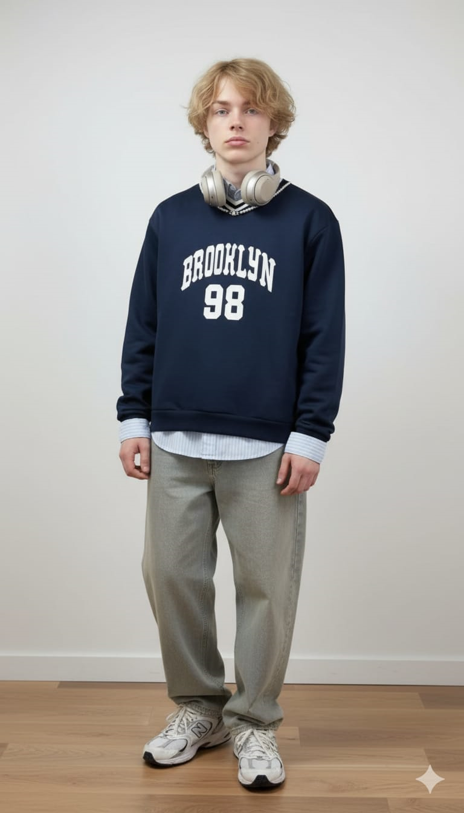
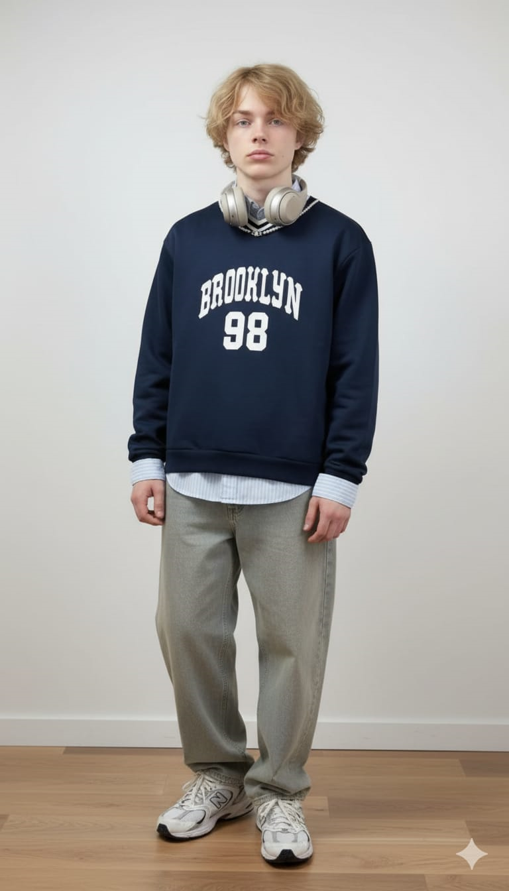
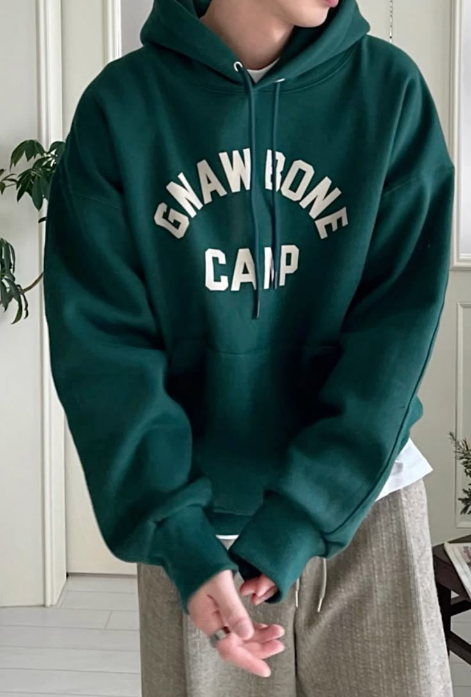
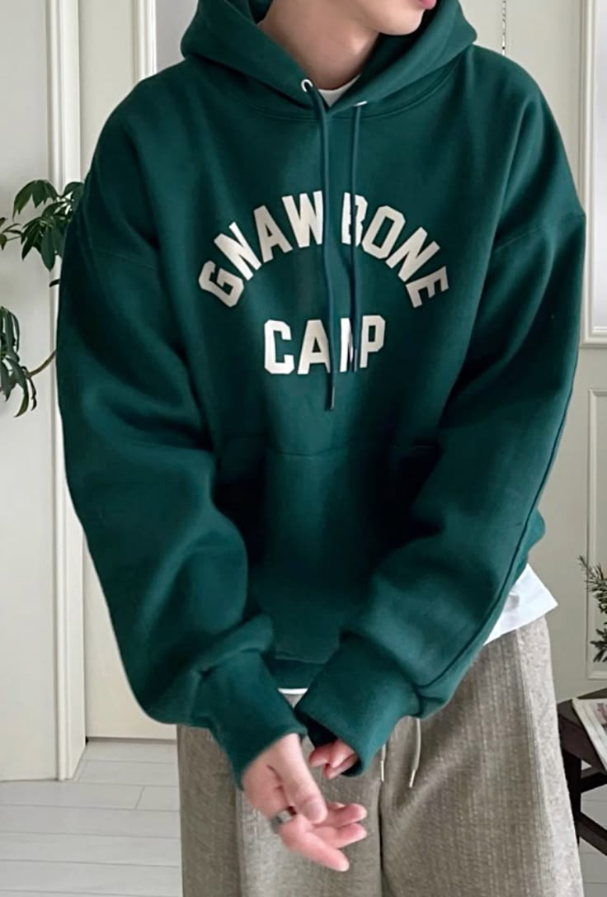

Mark Alexander Lucas
19
Edad Azul cielo
Color 21/05
Cumpleaños
Edad Azul cielo
Color 21/05
Cumpleaños
Es sarcastico e ironico. No suele levarse con mucha gente y solo deja entrar a muy pocos.P
Mayor miedo: Querer tanto a una persona que ya no pueda recuperarse si lo abandonan, nuevamente.
Mayor sueño: Ser músico.
Hobbies: Escribir y hacer música.
 


 
